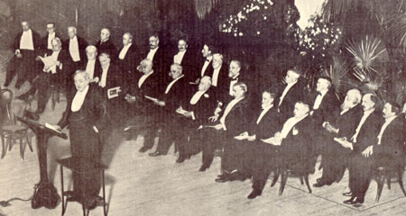

|
 Cable's Reminiscences[George Washington Cable was one of the speakers at the memorial service held for MT in New York on 30 November 1910. He devoted the second half of his remarks to his recollections of the tour he took with MT, which, in remarks delivered at MT's Seventieth Birthday Dinner, he'd called "one of the most notable experiences of my life."]It is because of that hold [MT] has on all our hearts -- and I speak for the whole American people -- it was that spirit that caused an audience once in Paris, Kentucky, who had applauded him until their palms were sore and until their feet were tired, and who had laughed as he came forward for the fourth alternation of our reading together -- the one side of him dragging, one foot limping after the other -- the peculiar way known to us all -- the house burst into such a storm of laughter, coming from so crowded a house, that Mark Twain himself, grim controller of his emotions at all times, burst into laughter and had to acknowledge to me, as he came off the platform: "Yes, yes" -- still laughing with joy of it himself -- "yes; they got me off my feet that time." I remember the hold he had upon children's hearts, another field of his human kindness to all humankind. It is illustrated in an experience he had in Cincinnati when certain children were brought by their aunt to hear Mark Twain read from his pages in that great city, brought down from the town of Hamilton, and who went back home in the late hours of the night, beside themselves with the delight of their clear understanding and full appreciation of his humor, saying to their kinswoman: "Oh, Auntie! Oh, Auntie! It was better than Buffalo Bill!" One point I should like to make to indicate the conscientiousness with which he held himself the custodian of the affections of the great mass of the people who loved him in every quarter of the land. It was the rigor of his art, an art which was able to carry the added burden beyond the burden of all other men's art, the burden of absolutely concealing itself and of making him appear, whenever he appeared, as slipshod in his mind as he was in his gait. We were at Toronto, Canada. The appointment was for us to read two nights in succession, and he had read one night. The vast hall was filled to overflowing. I heard from the retiring room the applause that followed every period of his utterance, heard it come rolling in and tumbling like the surf of the ocean. Well, at last, as we were driving home to our hotel, I found him in an absolutely wretched condition of mental depression, groaning and sighing, and all but weeping, and I asked him what in the world justified such a mood -- a man who had just come from such a triumph. "Such a triumph?" he said. "A triumph of the moment; but those people are going home to their beds, glad to get there, and they will wake up in the morning ashamed of having laughed at my nonsense." "Nonsense?" I said. "How is it nonsense?" "I have spent the evening, and their time, and taxed them to the best of their ability to show appreciation of my wit and humor, and I have spent that whole time simply spinning yarns." I said: "Don't mind; you are going to meet virtually the very same audience to-morrow, and to-morrow night you shall give them good literature, if any living writer in a living language has got that chance." I don't know if he slept that night, but I know he did what he did not often relish. He rehearsed, and rehearsed, and rehearsed, and the next night he gave them a programme which he chose to begin, at my suggestion, with the Blue Jay's Message. He left that house as happy as any one ever saw Mark Twain, and that was with a feeling of acute joy because he had won friends he considered worthy, he had won every handclap and applause with a programme worthy of honor. One more point: every one knows that one of his passions was for history, and I assume that that passion for history was one of the demonstrations of his human kindness. It was the story of the human heart, and he loved history because it was the story of humanity. One night we were in Rochester together. It was Saturday night, and for a wonder we were without an engagement that night, so we started out for a walk; we had gone a few steps when we found a bookstore, and at the same moment it was beginning to rain. I said: "Let us go in here." He said: "I remember I have not provided myself with anything to read all day to-morrow." I said: "We will get it here. I will look down that table, and you will look down this." Presently I went over to him and said I had not found anything that I thought would interest him, and asked him if he had found anything. He said no, he had not; but there was a book he did not remember any previous acquaintance with. He asked me what that book was. "Why," I said, "that is Sir Thomas Malory's Morte d'Arthur." And he said: "Shall we take it?" I said: "Yes; and you will never lay it down until you have read it from cover to cover." It was easy enough to make the prophecy, and, of course, it was fulfilled. He had read in it a day or two, when I saw come upon his cheekbones those vivid pink spots which every one who knew him intimately and closely knew meant that his mind was working with all its energies. I said to myself: "Ah, I think Sir Thomas Malory's Morte d'Arthur is going to bear fruit in the brain of Mark Twain." A year or two afterward, when he came to see me in my Northhampton home, I asked him what he was engaged in, and he said he was writing a story of A Yankee at the Court of King Arthur. I said: "If that be so, then I claim for myself the godfathership of that book." He said: "Yes; you are its godfather." I can claim no higher honor than to have the honor to claim that here and now, to-night, and to rejoice with you that we are able to offer a tribute to our affection to the memory of Mark Twain. |